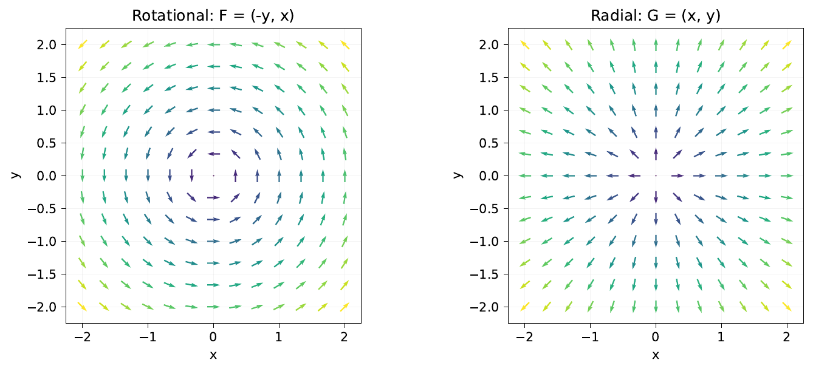
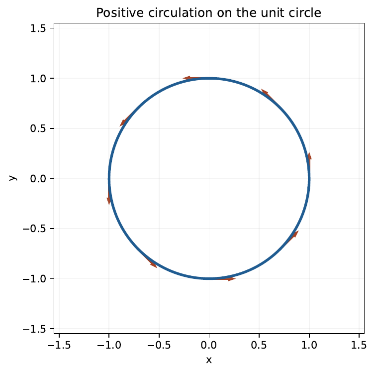
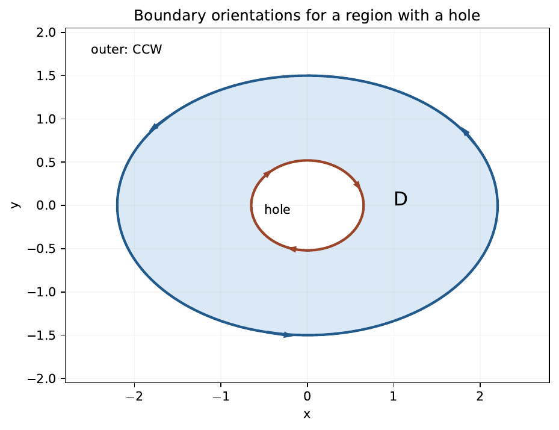
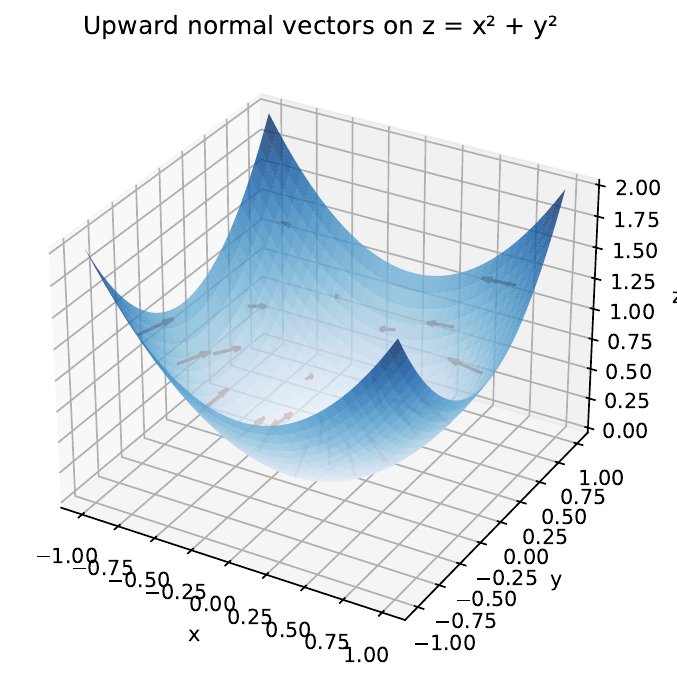
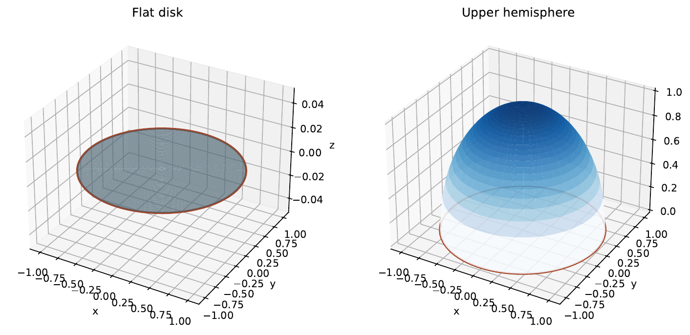
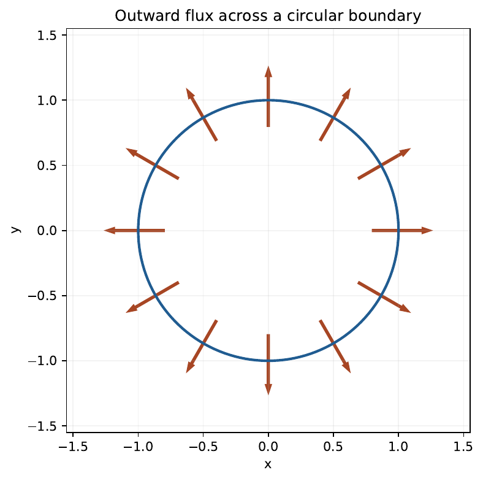

6. Vector Fields and Integral Theorems
Learning. By the end of this chapter, you should be able to visualize scalar and vector fields; compute scalar and vector line integrals; identify conservative fields and construct potentials; calculate circulation and flux; apply Green’s theorem, Stokes’ theorem, and the divergence theorem with correct orientations; parameterize surfaces and compute their area and flux; interpret divergence and curl locally; and use SymPy, NumPy, SciPy, and Matplotlib to check analytic calculations numerically.
Interactive investigation: Vector fields and circulation
Explore F(x,y)=(a x − b y, b x + a y).
Explore: Which parameter controls divergence? Which controls circulation around the unit circle?
Fields: quantities distributed through space
A scalar field assigns one number to each point: temperature \(T(x,y,z)\), density \(\rho(x,y,z)\), or pressure \(p(x,y,z)\). A vector field assigns a vector: fluid velocity, force, or an electric field. In the plane we write \(\boldsymbol{F}(x,y)=P(x,y)\boldsymbol{i}+Q(x,y)\boldsymbol{j}\); in space \(\boldsymbol{F}=P\boldsymbol{i}+Q\boldsymbol{j}+R\boldsymbol{k}\). The domain and differentiability of the component functions determine which operations are meaningful.
Example — Rotation and radial flow. The field \(\boldsymbol{F}=(-y,x)\) circulates counterclockwise around the origin. The field \(\boldsymbol{G}=(x,y)\) points radially outward. Both have magnitude \(\sqrt{x^2+y^2}\), yet their geometric behavior is completely different. A quiver plot should therefore display direction as well as magnitude.

Flow lines and integral curves
A flow line \(\boldsymbol{r}(t)\) of a stationary field satisfies \(\boldsymbol{r}'(t)=\boldsymbol{F}(\boldsymbol{r}(t))\). For \(\boldsymbol{F}=(-y,x)\), the system \(x'=-y\), \(y'=x\) has solution \(x=a\cos t-b\sin t\), \(y=a\sin t+b\cos t\): circles centered at the origin. This differential equation differs from a line integral: the former describes a trajectory, whereas the latter accumulates a quantity along a prescribed curve.
Remark — Computational follow-up. The complete example is developed in the paired R and Python sections and in the executable companion programs.
Parametrized curves and orientation
A piecewise continuously differentiable curve \(C\) is described by \(\boldsymbol{r}(t)\), \(a\le t\le b\). Its differential displacement is \(\,\mathrm{d}\boldsymbol{r}=\boldsymbol{r}'(t)\,\,\mathrm{d}t\) and its arc-length element is \(\,\mathrm{d}s=\left\lVert \boldsymbol{r}'(t)\right\rVert\,\mathrm{d}t\). A regular parametrization has \(\boldsymbol{r}'(t)\ne\boldsymbol{0}\); piecewise regular curves may have finitely many corners. Reversing the parameter direction reverses orientation but leaves geometric length unchanged.
Example — Two paths with the same endpoints. From \((0,0)\) to \((1,1)\), take \(C_1:\boldsymbol{r}(t)=(t,t)\) and \(C_2:\boldsymbol{q}(t)=(t,t^2)\) for \(0\le t\le1\). Both join the same endpoints, but their shapes and lengths differ. Whether a vector line integral depends on the path is a central question in this chapter.
Scalar line integrals: mass along a wire
Definition. If \(f\) is continuous on a piecewise smooth curve \(C\) parametrized by \(\boldsymbol{r}(t)\), define \[\int_C f\,\,\mathrm{d}s=\int_a^b f(\boldsymbol{r}(t))\left\lVert \boldsymbol{r}'(t)\right\rVert\,\,\mathrm{d}t.\]
The definition comes from dividing a wire into short segments, multiplying a representative density by segment length, and passing to the limit. For linear density \(\lambda\), mass is \(M=\int_C\lambda\,\,\mathrm{d}s\); the center of mass is \(\bar x=M^{-1}\int_C x\lambda\,\,\mathrm{d}s\), with analogous formulas for other coordinates. A scalar line integral does not change sign when orientation is reversed.
Example — Nonuniform circular wire. On the quarter unit circle \(\boldsymbol{r}(t)=(\cos t,\sin t)\), \(0\le t\le\pi/2\), let \(\lambda(x,y)=1+x\). Because \(\left\lVert \boldsymbol{r}'\right\rVert=1\), \[M=\int_0^{\pi/2}(1+\cos t)\,\,\mathrm{d}t=\frac\pi2+1.\] The \(x\)-moment is \(\int_0^{\pi/2}\cos t(1+\cos t)\,\,\mathrm{d}t=1+\pi/4\), hence \(\bar x=(1+\pi/4)/(1+\pi/2)\).
Remark — Computational follow-up. The complete example is developed in the paired R and Python sections and in the executable companion programs.
Vector line integrals: work and circulation
Definition. For \(\boldsymbol{F}=(P,Q,R)\) along an oriented curve \(C\), \[\int_C\boldsymbol{F}\cdot\,\mathrm{d}\boldsymbol{r} =\int_a^b\boldsymbol{F}(\boldsymbol{r}(t))\cdot\boldsymbol{r}'(t)\,\,\mathrm{d}t =\int_C P\,\,\mathrm{d}x+Q\,\,\mathrm{d}y+R\,\,\mathrm{d}z.\]
This measures tangential accumulation. For a force field, it is work; for fluid velocity around a closed curve, it is circulation. Reversing orientation changes its sign. The Cauchy–Schwarz inequality gives the useful bound \(|\int_C\boldsymbol{F}\cdot\,\mathrm{d}\boldsymbol{r}|\le \max_C\left\lVert \boldsymbol{F}\right\rVert\,L(C)\) for a continuous field along a finite-length curve.
Example — Work around a circle. For \(\boldsymbol{F}=(-y,x)\) and the counterclockwise unit circle \(\boldsymbol{r}(t)=(\cos t,\sin t)\), \(0\le t\le2\pi\), we have \(\boldsymbol{F}(\boldsymbol{r}(t))=\boldsymbol{r}'(t)\). Thus \[\oint_C\boldsymbol{F}\cdot\,\mathrm{d}\boldsymbol{r}=\int_0^{2\pi}1\,\,\mathrm{d}t=2\pi.\] Clockwise traversal yields \(-2\pi\). The field performs nonzero net work around a closed path and cannot be conservative on a domain containing this circle.

Independence of parametrization
For a smooth, orientation-preserving reparametrization \(t=\phi(u)\), substitution in the defining integral preserves \(\int_C\boldsymbol{F}\cdot\,\mathrm{d}\boldsymbol{r}\). If \(\phi\) reverses orientation, the endpoints swap and the integral changes sign. Thus a vector line integral belongs to an oriented geometric curve, not to a particular parameter speed.
Conservative fields and potential functions
Definition. A vector field \(\boldsymbol{F}\) is conservative on a domain \(D\) if there exists a differentiable scalar potential \(\varphi\) with \(\boldsymbol{F}=\nabla\varphi\) on \(D\).
Theorem — Fundamental theorem for line integrals. If \(\boldsymbol{F}=\nabla\varphi\) on a domain containing a piecewise smooth curve \(C\) from \(A\) to \(B\), then \[\int_C\boldsymbol{F}\cdot\,\mathrm{d}\boldsymbol{r}=\varphi(B)-\varphi(A).\] In particular, the integral around every closed curve in that domain is zero.
Proof. By the multivariable chain rule, \(\frac{\,\mathrm{d}}{\,\mathrm{d}t}\varphi(\boldsymbol{r}(t))=\nabla\varphi(\boldsymbol{r}(t))\cdot\boldsymbol{r}'(t)\). Integrate both sides from \(a\) to \(b\) and apply the one-variable fundamental theorem of calculus.
Example — Finding a potential. Let \(\boldsymbol{F}=(2xy+3,x^2+2y)\). Integrating \(\varphi_x=2xy+3\) with respect to \(x\) gives \(\varphi=x^2y+3x+h(y)\). Then \(\varphi_y=x^2+h'(y)=x^2+2y\), so \(h(y)=y^2+C\). Work from \((0,0)\) to \((1,2)\) is \(\varphi(1,2)-\varphi(0,0)=2+3+4=9\), regardless of path.
Proposition — A useful test in the plane. If \(P,Q\) have continuous first derivatives on a simply connected open domain \(D\), then \(P\,\,\mathrm{d}x+Q\,\,\mathrm{d}y\) is conservative if and only if \(P_y=Q_x\) throughout \(D\).
Proof — Explanation. If a potential has continuous second derivatives, equality of mixed partials gives \(P_y=Q_x\). Conversely, on a simply connected domain, Green’s theorem implies that integrals around closed curves vanish; defining \(\varphi(X)\) by integration from a fixed base point gives a path-independent potential. The topological hypothesis matters.
Remark — A hole in the domain. The field \(\boldsymbol{H}=(-y/(x^2+y^2),\,x/(x^2+y^2))\) has \(P_y=Q_x\) away from the origin but circulation \(2\pi\) around the unit circle. It has no globally defined single-valued potential on \(\mathbb{R}^2\setminus\{(0,0)\}\). Local derivative tests must not be applied without checking the domain.
Checkpoint. For \(\boldsymbol{F}=(2xy+y,\,x^2+x)\), determine whether \(\boldsymbol{F}\) is conservative on \(\mathbb{R}^2\). Find a potential and evaluate the work from \((0,0)\) to \((2,1)\).
Green’s theorem: a boundary measures an interior
Theorem — Green’s theorem, circulation form. Let \(D\) be a bounded planar region with positively oriented, piecewise smooth boundary \(C\) and suppose \(P,Q\) have continuous first derivatives on an open neighborhood of \(D\). Then \[\boxed{\oint_C P\,\,\mathrm{d}x+Q\,\,\mathrm{d}y=\iint_D\left(Q_x-P_y\right)\,\,\mathrm{d}A.}\] Positive orientation means that \(D\) stays on the left while traversing its boundary; for a simple region this is counterclockwise. For a region with holes, inner boundaries are clockwise.
Proof — For a vertically simple region. For \(D=\{(x,y):a\le x\le b,\,g_1(x)\le y\le g_2(x)\}\), the contributions of \(P\,\,\mathrm{d}x\) from the upper and lower boundary combine into \(\int_a^b[P(x,g_1(x))-P(x,g_2(x))]\,\,\mathrm{d}x=-\iint_D P_y\,\,\mathrm{d}A\). The analogous argument on a horizontally simple region gives \(\oint_C Q\,\,\mathrm{d}y=\iint_DQ_x\,\,\mathrm{d}A\). Subdivide a more general regular region into pieces and cancel the contributions along internal boundaries.
Example — Circulation of a rotating field. For \(\boldsymbol{F}=(-y,x)\), \(Q_x-P_y=1-(-1)=2\). Over a disk of radius \(a\), Green’s theorem gives \(\oint_C\boldsymbol{F}\cdot\,\mathrm{d}\boldsymbol{r}=2\pi a^2\). Direct parametrization yields the same value.
Area from boundary data
Choosing \(P=-y/2\), \(Q=x/2\) makes \(Q_x-P_y=1\), so \[\operatorname{Area}(D)=\frac12\oint_C(x\,\,\mathrm{d}y-y\,\,\mathrm{d}x).\] For a counterclockwise polygon with vertices \((x_i,y_i)\) and \((x_{n+1},y_{n+1})=(x_1,y_1)\), evaluating the edge integrals produces the shoelace formula \(A=\frac12\sum_i(x_i y_{i+1}-x_{i+1}y_i)\).

Flux across planar curves
Circulation measures tangential flow; flux measures crossing. For a counterclockwise parametrized boundary, the outward unit normal is \(\boldsymbol{n}=(y',-x')/\left\lVert \boldsymbol{r}'\right\rVert\). Hence \(\boldsymbol{n}\,\,\mathrm{d}s=(\,\mathrm{d}y,-\,\mathrm{d}x)\) and \[\oint_C\boldsymbol{F}\cdot\boldsymbol{n}\,\,\mathrm{d}s=\oint_C P\,\,\mathrm{d}y-Q\,\,\mathrm{d}x.\] Applying Green’s theorem to \((-Q,P)\) yields the planar flux form:
Theorem — Green’s theorem, flux form. Under the same regularity and orientation hypotheses, \[\boxed{\oint_C\boldsymbol{F}\cdot\boldsymbol{n}\,\,\mathrm{d}s=\iint_D(P_x+Q_y)\,\,\mathrm{d}A.}\]
Example — Outward flux of a radial field. For \(\boldsymbol{F}=(x,y)\), \(\operatorname{div}\boldsymbol{F}=2\). On the disk of radius \(a\), outward flux is \(2\pi a^2\). Directly, \(\boldsymbol{F}\cdot\boldsymbol{n}=a\) and the circumference is \(2\pi a\).
Divergence and curl as local measurements
For \(\boldsymbol{F}=(P,Q,R)\), define \[\operatorname{div}\boldsymbol{F}=P_x+Q_y+R_z,\qquad \nabla\times\boldsymbol{F}=(R_y-Q_z,\,P_z-R_x,\,Q_x-P_y).\] Divergence describes net outward flux per unit volume in the infinitesimal limit; curl describes oriented circulation density. These are derivatives, not direct statements about whether arrows appear to bend in a plot.
Example — Contrasting local behaviors. For \(\boldsymbol{F}=(-y,x,0)\), \(\operatorname{div}\boldsymbol{F}=0\) and \(\nabla\times\boldsymbol{F}=(0,0,2)\). For \(\boldsymbol{G}=(x,y,z)\), \(\operatorname{div}\boldsymbol{G}=3\) and \(\nabla\times\boldsymbol{G}=\boldsymbol{0}\). A field may have zero divergence without being constant or conservative.
Remark — Computational follow-up. The complete example is developed in the paired R and Python sections and in the executable companion programs.
Two useful identities
For sufficiently smooth \(\varphi\) and \(\boldsymbol{F}\), \[\nabla\times(\nabla\varphi)=\boldsymbol{0},\qquad\operatorname{div}(\nabla\times\boldsymbol{F})=0.\] Both follow from equality of mixed second partial derivatives. Their converses require geometric or topological assumptions and must not be used indiscriminately.
Parametrized surfaces and orientation
A smooth surface patch is described by \(\boldsymbol{r}(u,v)\) for \((u,v)\) in a planar parameter domain \(D\). The tangent vectors are \(\boldsymbol{r}_u\) and \(\boldsymbol{r}_v\). Their cross product is normal to the surface; the area element is \[\,\mathrm{d}S=\left\lVert \boldsymbol{r}_u\times\boldsymbol{r}_v\right\rVert\,\,\mathrm{d}u\,\,\mathrm{d}v.\] The scalar surface integral is \(\iint_S f\,\,\mathrm{d}S=\iint_D f(\boldsymbol{r}(u,v))\left\lVert \boldsymbol{r}_u\times\boldsymbol{r}_v\right\rVert\,\,\mathrm{d}u\,\,\mathrm{d}v\). For a vector field and a chosen orientation, \[\iint_S\boldsymbol{F}\cdot\boldsymbol{n}\,\,\mathrm{d}S =\iint_D\boldsymbol{F}(\boldsymbol{r}(u,v))\cdot(\boldsymbol{r}_u\times\boldsymbol{r}_v)\,\,\mathrm{d}u\,\,\mathrm{d}v.\] Interchanging \(u\) and \(v\) reverses the normal. An outward orientation on a closed surface points away from its enclosed region.
Example — Flux through an upward graph. For \(S:z=x^2+y^2\) above the unit disk, use \(\boldsymbol{r}(x,y)=(x,y,x^2+y^2)\). Then \(\boldsymbol{r}_x\times\boldsymbol{r}_y=(-2x,-2y,1)\), an upward normal area vector. For \(\boldsymbol{F}=(0,0,z)\), the flux is \[\iint_S\boldsymbol{F}\cdot\boldsymbol{n}\,\,\mathrm{d}S=\iint_{x^2+y^2\le1}(x^2+y^2)\,\,\mathrm{d}A =\int_0^{2\pi}\int_0^1 r^3\,\,\mathrm{d}r\,\,\mathrm{d}\theta=\frac\pi2.\]

The divergence theorem
Theorem — Gauss–Ostrogradsky divergence theorem. Let \(E\) be a bounded solid with a piecewise smooth closed boundary \(S=\partial E\) oriented outward, and let \(\boldsymbol{F}\) have continuous first derivatives on a neighborhood of \(E\). Then \[\boxed{\iint_{\partial E}\boldsymbol{F}\cdot\boldsymbol{n}\,\,\mathrm{d}S=\iiint_E\operatorname{div}\boldsymbol{F}\,\,\mathrm{d}V.}\]
Proof — Idea for a rectangular box. The flux across the two faces perpendicular to the \(x\)-axis is \(\int\int[P(b,y,z)-P(a,y,z)]\,\,\mathrm{d}y\,\,\mathrm{d}z=\iiint_E P_x\,\,\mathrm{d}V\). Analogous calculations for the \(y\) and \(z\) faces give the integrals of \(Q_y\) and \(R_z\). Add them. For general solids, subdivide into small boxes and cancel flux through internal faces, then pass to a limit.
Example — Flux through a sphere. Let \(\boldsymbol{F}=(x,y,z)\) and \(E\) be a ball of radius \(a\). Since \(\operatorname{div}\boldsymbol{F}=3\), \[\iint_{\partial E}\boldsymbol{F}\cdot\boldsymbol{n}\,\,\mathrm{d}S=3\cdot\frac{4\pi a^3}{3}=4\pi a^3.\] On the sphere, \(\boldsymbol{F}\cdot\boldsymbol{n}=a\) and surface area is \(4\pi a^2\), giving the same answer.
Remark — Closed surfaces are essential. The divergence theorem applies to the entire boundary. If a surface is open, close it with a cap, compute the total outward flux, and subtract the cap’s flux. Keep orientations consistent.
Stokes’ theorem: circulation and curl
Theorem — Stokes’ theorem. Let \(S\) be a smooth oriented surface (or a finite union of smooth patches) with piecewise smooth boundary \(C=\partial S\), and let \(\boldsymbol{F}\) have continuous first derivatives near \(S\). Give \(C\) the orientation induced by the right-hand rule relative to the chosen normal. Then \[\boxed{\oint_C\boldsymbol{F}\cdot\,\mathrm{d}\boldsymbol{r}=\iint_S(\nabla\times\boldsymbol{F})\cdot\boldsymbol{n}\,\,\mathrm{d}S.}\]
Proof — Connection to Green’s theorem. For a single parametrized patch \(\boldsymbol{r}(u,v)\), pull back the line integral to the boundary of the parameter domain. The resulting coefficients are \(A=\boldsymbol{F}(\boldsymbol{r})\cdot\boldsymbol{r}_u\) and \(B=\boldsymbol{F}(\boldsymbol{r})\cdot\boldsymbol{r}_v\). Green’s theorem gives \(\oint(A\,\,\mathrm{d}u+B\,\,\mathrm{d}v)=\iint(B_u-A_v)\,\,\mathrm{d}u\,\,\mathrm{d}v\). The chain and product rules show \(B_u-A_v=(\nabla\times\boldsymbol{F})(\boldsymbol{r})\cdot(\boldsymbol{r}_u\times\boldsymbol{r}_v)\). For multiple patches, integrals on shared edges cancel.
Example — The same boundary, two surfaces. Take \(\boldsymbol{F}=(-y/2,x/2,0)\) and \(C:x^2+y^2=1\), \(z=0\), counterclockwise viewed from above. The curl is \((0,0,1)\). Over the flat disk \(S_1\), upward curl flux is \(\pi\). Over the upward-oriented hemisphere \(S_2:z=\sqrt{1-x^2-y^2}\), the flux is again \(\pi\), because \(\iint_{S_2}n_z\,\,\mathrm{d}S\) equals the area of its horizontal projection. Directly, \(\oint_C\boldsymbol{F}\cdot\,\mathrm{d}\boldsymbol{r}=\pi\). The equality depends on both surfaces inducing the same boundary orientation.

How the theorems fit together
The fundamental theorem for line integrals relates a gradient integrated along a path to values at endpoints. Green’s theorem relates a planar boundary integral to an interior double integral. Stokes’ theorem extends circulation–curl balance to surfaces in three dimensions. The divergence theorem relates outward flux across a closed surface to sources and sinks throughout the enclosed solid. All four compare a derivative accumulated over a region with a quantity measured at its boundary.
A practical theorem-selection workflow
Before integrating, identify the dimension of the domain and the kind of boundary data. For work along a curve, test for a potential. For planar circulation, consider Green’s theorem. For circulation along a spatial closed curve, consider Stokes’ theorem and choose a convenient spanning surface. For outward flux across a closed surface, consider the divergence theorem. A direct parametrization remains valuable as a verification method. Always check continuity, holes or singularities, whether the surface is closed, and the required orientation.
Checkpoint. A vector field is undefined at the origin, and the surface encloses the origin. Can the divergence theorem be applied directly? Explain what region would need to be removed or what limiting argument would be required.
Additional mathematical examples from the R manuscript
Mass of a nonuniform semicircular wire
For the upper semicircle \(\boldsymbol{r}(t)=(2\cos t,2\sin t)\), \(0\le t\le\pi\), with linear density \(\rho=1+y\), the speed is \(2\) and \[M=\int_0^\pi (1+2\sin t)2\,\,\mathrm{d}t=2\pi+8.\] Unlike a vector work integral, this mass integral does not change under reversal of orientation.
An explicit conservative-field potential
Let \(\boldsymbol{F}=(2xy+\cos x,x^2+3y^2)\). Integrating its first component with respect to \(x\) and matching the second yields \[\phi(x,y)=x^2y+\sin x+y^3,\quad\nabla\phi=\boldsymbol{F}.\] Consequently the work from \((0,0)\) to \((1,2)\) is \(\phi(1,2)-\phi(0,0)=10+\sin1\), independent of the connecting path.
Flux through a paraboloid
On \(S:z=4-x^2-y^2\) above the unit disk, the upward-oriented vector area element is \((2x,2y,1)\,\,\mathrm{d}x\,\mathrm{d}y\). For \(\boldsymbol{F}=(0,0,z)\), \[\iint_S\boldsymbol{F}\cdot\boldsymbol{n}\,\,\mathrm{d}S=\iint_D(4-x^2-y^2)\,\,\mathrm{d}A=\frac{7\pi}{2}.\] This example makes the distinction between scalar surface area and oriented flux explicit.
Divergence theorem on the unit cube
For \(\boldsymbol{F}=(x^2,y^2,z^2)\) on \([0,1]^3\), the divergence is \(2x+2y+2z\), giving total outward flux \(3\). Direct flux across the three coordinate-one faces gives \(1\) per face, while the coordinate-zero faces contribute \(0\).
Deeper mathematical foundations: orientation, topology, and regularity
When zero curl does not imply a potential
The implication “zero curl implies a potential” requires hypotheses on the domain. On the punctured plane \(D=\mathbb{R}^2\setminus\{(0,0)\}\), consider \[\boldsymbol{H}(x,y)=\left(-\frac{y}{x^2+y^2},\frac{x}{x^2+y^2}\right).\] Its component derivatives satisfy \(Q_x-P_y=0\) at every point of \(D\), but for \(C(t)=(\cos t,\sin t)\), \[\oint_C\boldsymbol{H}\cdot\,\mathrm{d}\boldsymbol{r}=\int_0^{2\pi}1\,\,\mathrm{d}t=2\pi.\] A potential would force every closed-loop integral to vanish, a contradiction. This is a topological obstruction: \(C\) cannot be contracted to a point within \(D\). The example also explains why a computational curl test is not a substitute for checking domain hypotheses.
Theorem — Conservative-field criterion on simply connected domains. Let \(D\subset\mathbb{R}^2\) be open and simply connected and let \(P,Q\in C^1(D)\). If \(P_y=Q_x\) throughout \(D\), then \((P,Q)\) has a potential on \(D\).
Proof — Geometric proof outline. For any two piecewise smooth paths between the same endpoints, their concatenation forms a closed curve. Simple connectivity allows its interior to be decomposed into regions where Green’s theorem applies. Since \(Q_x-P_y=0\), every such closed integral is zero. Hence the line integral from a fixed base point to \((x,y)\) is path independent; defining this integral as \(\varphi(x,y)\) and differentiating along short coordinate segments gives \(\nabla\varphi=(P,Q)\).
The distinction between a surface normal and a unit normal
For a regular parametrized surface \(\boldsymbol{r}(u,v)\), the vector \(\boldsymbol{r}_u\times\boldsymbol{r}_v\) encodes both orientation and the local area scaling. Consequently, \[\iint_S\boldsymbol{F}\cdot\boldsymbol{n}\,\,\mathrm{d}S=\iint_D\boldsymbol{F}(\boldsymbol{r}(u,v))\cdot(\boldsymbol{r}_u\times\boldsymbol{r}_v)\,\,\mathrm{d}u\,\mathrm{d}v.\] If \(\boldsymbol{n}=(\boldsymbol{r}_u\times\boldsymbol{r}_v)/\|\boldsymbol{r}_u\times\boldsymbol{r}_v\|\), then \(\,\mathrm{d}S=\|\boldsymbol{r}_u\times\boldsymbol{r}_v\|\,\,\mathrm{d}u\,\mathrm{d}v\). In numerical code, multiplying by the norm a second time would double-count the area factor.
Example — Flux through a tilted planar patch. Let \(S\) be \(\boldsymbol{r}(u,v)=(u,v,u+2v)\) for \(0\le u,v\le1\), oriented upward, and let \(\boldsymbol{F}=(1,2,3)\). Then \(\boldsymbol{r}_u\times\boldsymbol{r}_v=(-1,-2,1)\) and \[\iint_S\boldsymbol{F}\cdot\boldsymbol{n}\,\,\mathrm{d}S=\int_0^1\int_0^1(-1-4+3)\,\,\mathrm{d}u\,\mathrm{d}v=-2.\] The sign is negative even though the chosen normal has a positive vertical component: the field crosses this plane primarily in the opposite direction.
Extended worked examples: integral theorems in practice
Green’s theorem on an ellipse: a source-derived R example
For the counterclockwise ellipse \(x=a\cos t\), \(y=b\sin t\), \(0\le t\le2\pi\), and \(\boldsymbol{F}=(-y,x)\), direct integration gives \[\oint_C(-y\,\,\mathrm{d}x+x\,\,\mathrm{d}y)=\int_0^{2\pi}ab(\sin^2t+\cos^2t)\,\,\mathrm{d}t=2\pi ab.\] Green’s theorem gives \(\iint_D 2\,\,\mathrm{d}A=2\pi ab\). The result holds for every \(a,b>0\) and provides a useful parameterized numerical benchmark.
Green’s theorem on an annulus: two boundary components
Let \(D=\{(x,y):1\le x^2+y^2\le4\}\) and \(\boldsymbol{F}=(-y/2,x/2)\). Its scalar curl is \(1\). Positive orientation means counterclockwise on the outer radius-two circle and clockwise on the inner radius-one circle. Hence \[\oint_{\partial D}\boldsymbol{F}\cdot\,\mathrm{d}\boldsymbol{r}=\pi(2^2)-\pi(1^2)=3\pi=\iint_D1\,\,\mathrm{d}A.\] Traversing both circles counterclockwise would produce \(5\pi\), which is not the correctly oriented boundary integral. This is a common orientation error.
The divergence theorem on a rectangular box
Let \(V=[0,a]\times[0,b]\times[0,c]\) and \(\boldsymbol{F}=(x^2,y^2,z^2)\). The divergence is \(2x+2y+2z\), so \[\iiint_V\nabla\cdot\boldsymbol{F}\,\,\mathrm{d}V=a^2bc+ab^2c+abc^2.\] The outward flux through the three positive-coordinate faces is respectively \(a^2bc\), \(ab^2c\), and \(abc^2\). The other three faces contribute zero. Both methods agree for arbitrary positive side lengths, not only for the unit cube.
Stokes’ theorem and a nonplanar spanning surface
Let \(C\) be the counterclockwise circle \(x^2+y^2=a^2\) in the plane \(z=0\), and let \(S\) be the paraboloid \(z=a^2-x^2-y^2\) above the disk, oriented upward. For \(\boldsymbol{F}=(-y/2,x/2,z)\), \(\nabla\times\boldsymbol{F}=(0,0,1)\). Using \(\boldsymbol{r}(x,y)=(x,y,a^2-x^2-y^2)\), \[\iint_S(\nabla\times\boldsymbol{F})\cdot\boldsymbol{n}\,\,\mathrm{d}S=\iint_D(0,0,1)\cdot(2x,2y,1)\,\,\mathrm{d}A=\pi a^2.\] On \(C(t)=(a\cos t,a\sin t,0)\), the work integrand is \(a^2/2\), giving \(\pi a^2\). The disk and paraboloid have different areas but the same oriented boundary, and therefore the same curl flux.
Error control and computational reliability
Quadrature tolerance and orientation checks
Numerical agreement should be reported with an error metric, for example \[E_{\mathrm{abs}}=|I_{\mathrm{boundary}}-I_{\mathrm{interior}}|,\qquad E_{\mathrm{rel}}=\frac{E_{\mathrm{abs}}}{\max(1,|I_{\mathrm{interior}}|)}.\] An appropriate validation suite should compare at least two mathematically independent expressions, reverse orientations to check sign changes, and refine the numerical resolution. Agreement at a single mesh size does not prove a theorem or establish convergence.
A convergence check for the periodic trapezoidal rule
For a smooth \(2\pi\)-periodic boundary integrand \(g\), approximate \[I=\int_0^{2\pi}g(t)\,\,\mathrm{d}t\quad\text{by}\quad T_N=\frac{2\pi}{N}\sum_{j=0}^{N-1}g(2\pi j/N).\] This rule is particularly effective for smooth periodic data. For the ellipse example above, \(g(t)=ab\) is constant, so \(T_N=2\pi ab\) for every positive integer \(N\). A more informative convergence test uses a nonconstant field, such as \(\boldsymbol{F}=(-y(1+x^2),x)\), and compares successive \(N\) values against a high-accuracy adaptive integral.
Paired computational laboratory: three independent theorem checks
The next examples use the same geometry and exact benchmarks in R and Python. The complete programs are included in the companion archive.
R: ellipse, annulus, and box
a <- 3; b <- 2
ellipse <- integrate(function(t) rep(a*b,length(t)),0,2*pi)$value
annulus <- pi*(2^2-1^2)
box <- function(a,b,c) a^2*b*c+a*b^2*c+a*b*c^2
print(c(ellipse=ellipse,expected=2*pi*a*b,
annulus=annulus,box=box(2,3,4)))
stopifnot(abs(ellipse-2*pi*a*b)<1e-9)
stopifnot(abs(annulus-3*pi)<1e-9)
stopifnot(abs(box(2,3,4)-216)<1e-9)Python: the same three calculations
import numpy as np
from scipy.integrate import quad
a,b = 3.0,2.0
ellipse = quad(lambda t:a*b,0,2*np.pi)[0]
annulus = np.pi*(2**2-1**2)
def box(a,b,c):
return a*a*b*c+a*b*b*c+a*b*c*c
print('ellipse',ellipse,'annulus',annulus,'box',box(2,3,4))
assert np.isclose(ellipse,2*np.pi*a*b)
assert np.isclose(annulus,3*np.pi)
assert np.isclose(box(2,3,4),216)Checkpoint. Before accepting numerical agreement, explain the role of boundary orientation in the annulus, verify the units of flux, and state the regularity assumptions required for the selected integral theorem.
Further exercises: proof, computation, and interpretation
Show directly that the field \((-y/(x^2+y^2),x/(x^2+y^2))\) has zero scalar curl away from the origin, yet circulation \(2\pi\) on the unit circle. Explain why there is no contradiction.
For \(\boldsymbol{F}=(x^2,y^2)\) and the positively oriented boundary of \([0,a]\times[0,b]\), compute the outward flux directly and using Green’s flux form.
Find the flux of \((1,2,3)\) through the upward-oriented graph \(z=x+2y\) above the unit square. Reverse the orientation and interpret the result.
Let \(\boldsymbol{F}=(-y(1+x^2),x)\) on the ellipse \(x=3\cos t\), \(y=2\sin t\). Derive the boundary integrand, use Green’s theorem for an independent exact integral, and compare with the periodic trapezoidal rule at \(N=8,16,32,64\).
Show that \(\iint_S(\nabla\times\boldsymbol{F})\cdot\boldsymbol{n}\,\,\mathrm{d}S\) is unchanged when an upward-oriented planar disk is replaced by the upward-oriented paraboloid with the same boundary, assuming all hypotheses of Stokes’ theorem.
For \(\boldsymbol{F}=(x^2,y^2,z^2)\) on \([0,a]\times[0,b]\times[0,c]\), calculate the flux through all six faces separately, including the outward unit normal for each.
Develop a unit test in R and Python that detects an accidentally reversed surface orientation. Include a test for a nonzero exact flux.
Write a short critique of the statement: “The numerical circulation and curl-flux agree to ten decimal places, so Stokes’ theorem has been proved.”
Solving the mathematical problems using R
The examples use base R’s adaptive one-dimensional
integrate() and numerical differentiation only where
appropriate. The complete executable program is
code/chapter06_paired.R.
Circulation around a circle and Green’s theorem
a <- 2
integrand <- function(t) a^2 + 0*t
circulation <- integrate(integrand, 0, 2*pi)$value
area_side <- 2*pi*a^2
print(c(boundary=circulation, interior=area_side))
stopifnot(abs(circulation-area_side)<1e-8)For \(\boldsymbol{F}=(-y,x)\), both calculations equal \(2\pi a^2\).
Scalar wire mass and paraboloid flux
wire_mass <- integrate(function(t) 2*(1+2*sin(t)),0,pi)$value
flux <- integrate(function(r) 2*pi*(4-r^2)*r,0,1)$value
print(c(wire_mass=wire_mass,exact_mass=2*pi+8,
surface_flux=flux,exact_flux=7*pi/2))Stokes’ theorem on two spanning surfaces
With \(\boldsymbol{F}=(-y/2,x/2,z)\), \(\nabla\times\boldsymbol{F}=(0,0,1)\). For the circle of radius \(2\), the line integral and curl flux across either the disk or the paraboloid cap are \(4\pi\).
a <- 2
line <- integrate(function(t) rep(a^2/2,length(t)),0,2*pi)$value
flat <- pi*a^2
cap <- integrate(function(r) 2*pi*r,0,a)$value
print(c(line=line,flat=flat,cap=cap))
stopifnot(max(abs(c(line,flat,cap)-4*pi))<1e-8)Solving the same problems using Python
Python uses SciPy for quadrature and SymPy for symbolic checks. The
complete program is code/chapter06_paired.py.
Green’s theorem and the wire mass
import numpy as np
from scipy.integrate import quad
a=2.0
circulation=quad(lambda t:a*a,0,2*np.pi)[0]
wire_mass=quad(lambda t:2*(1+2*np.sin(t)),0,np.pi)[0]
print(circulation,2*np.pi*a*a)
print(wire_mass,2*np.pi+8)Flux and Stokes’ theorem
flux=quad(lambda r:2*np.pi*(4-r*r)*r,0,1)[0]
line=quad(lambda t:a*a/2,0,2*np.pi)[0]
cap=quad(lambda r:2*np.pi*r,0,a)[0]
print('paraboloid flux',flux,'exact',7*np.pi/2)
print('Stokes boundary',line,'cap',cap,'disk',np.pi*a*a)
assert abs(flux-7*np.pi/2)<1e-9
assert abs(line-cap)<1e-9Comparing R and Python results
Both programs evaluate the same parameterizations, orientation conventions, and exact benchmarks. Numerical agreement is a useful diagnostic, but the theorems require the stated smoothness and geometric hypotheses. When orientation is reversed, the signed work and flux change sign; scalar wire mass does not.
Application: idealized circulation and fluid transport
Consider a planar idealized velocity field \(\boldsymbol{v}=(-\omega y,\omega x)\), where \(\omega\) is a constant with units s\(^{-1}\). Its divergence is zero and scalar curl is \(2\omega\). Around a counterclockwise circular boundary of radius \(a\), circulation is \(2\pi\omega a^2\). The net outward planar flux is zero. This illustrates that rotational motion and net expansion are different local phenomena; the model is not a measured environmental flow.

Chapter project: one boundary, two spanning surfaces
Let \(C\) be the circle \(x^2+y^2=4\), \(z=0\), oriented counterclockwise viewed from above, and let \(\boldsymbol{F}=(-y/2,x/2,z)\).
Parametrize \(C\) and evaluate the circulation analytically, identifying the orientation.
Compute \(\nabla\times\boldsymbol{F}\) and evaluate its flux across the flat disk \(z=0\) with upward orientation.
Repeat across the paraboloid cap \(z=4-x^2-y^2\) using an upward normal and a correct parameter-domain Jacobian.
Implement all three computations independently in R and Python, checking each against the exact result \(4\pi\).
Reverse the orientation of the curve and surfaces and explain every sign change.
Explore at least three circle radii, produce a labeled plot of the field and boundary, and tabulate exact and numerical circulation.
Submit a two-page report explaining Stokes’ theorem, assumptions, numerical tolerance, and why matching floating-point results do not constitute a proof.
Suggested rubric (100 points): analytic development 30; orientation and theorem hypotheses 20; R implementation 15; Python implementation 15; figures and comparison 10; written interpretation 10.
Chapter summary
Scalar line integrals weight arc length; vector line integrals measure tangential work or circulation and depend on orientation.
Conservative fields are gradients; their line integrals depend only on endpoints.
Green’s theorem connects planar circulation or flux with curl or divergence over the enclosed region.
Surface flux uses a normal area vector, whose sign is determined by orientation.
The divergence theorem converts outward flux across a closed surface into a triple integral of divergence.
Stokes’ theorem converts circulation around a surface boundary into curl flux through the surface.
Numerical checks are most meaningful when the domain, parameter bounds, Jacobians, and orientation are explicitly documented.
Exercises
Fields and line integrals
Sketch \(\boldsymbol{F}=(y,-x)\) at \((1,0)\), \((0,1)\), and \((-1,-1)\). State the direction of rotation.
Find the flow lines of \(\boldsymbol{F}=(2x,-y)\) through \((1,1)\).
Parametrize the segment from \((1,-2)\) to \((4,3)\) in both orientations.
Compute \(\int_C(x+y)\,\,\mathrm{d}s\) along \(\boldsymbol{r}(t)=(t,2t)\), \(0\le t\le1\).
Find the mass of the upper semicircle \(x^2+y^2=4\) with density \(\lambda=1+y\).
Compute \(\int_C(y\,\,\mathrm{d}x+x\,\,\mathrm{d}y)\) along the parabola \(y=x^2\), \(0\le x\le2\).
Evaluate \(\int_C(-y\,\,\mathrm{d}x+x\,\,\mathrm{d}y)\) around the circle \(x^2+y^2=9\) counterclockwise.
Re-evaluate Exercise 6.7 clockwise. Explain the change.
Find the work of \(\boldsymbol{F}=(x,y,z)\) along the straight segment from \((0,0,0)\) to \((1,2,2)\).
Evaluate the scalar line integral of \(f=x^2+y^2\) over the unit circle.
Potentials and Green’s theorem
Determine whether \(\boldsymbol{F}=(2xy,x^2+3y^2)\) is conservative; find a potential if possible.
Evaluate the work of \(\boldsymbol{F}=(e^x\cos y,-e^x\sin y)\) from \((0,0)\) to \((1,\pi/2)\).
Explain why \(\boldsymbol{F}=(-y/(x^2+y^2),x/(x^2+y^2))\) is not conservative on the punctured plane.
Use Green’s theorem to compute \(\oint_C(-y\,\,\mathrm{d}x+x\,\,\mathrm{d}y)\) for the ellipse \(x^2/4+y^2/9=1\) counterclockwise.
Evaluate \(\oint_C (x^2-y)\,\,\mathrm{d}x+(y^2+x)\,\,\mathrm{d}y\) around the unit square positively oriented.
Use Green’s theorem to compute the area enclosed by \(x=a\cos t\), \(y=b\sin t\).
Find the outward flux of \(\boldsymbol{F}=(x^2,y^2)\) across the unit square.
Compute the outward flux of \(\boldsymbol{F}=(x,y)\) across the circle of radius \(3\).
For an annulus \(1\le x^2+y^2\le4\), specify the positive orientation of each boundary component.
Derive the shoelace area formula by integrating \(x\,\,\mathrm{d}y-y\,\,\mathrm{d}x\) along a polygon edge.
Surface integrals and major theorems
Find the upward normal area vector for \(z=2x+y^2\) parametrized by \((x,y)\).
Compute the area of the graph \(z=x+y\) over \([0,1]^2\).
Compute upward flux of \(\boldsymbol{F}=(0,0,1)\) through \(z=x^2+y^2\) over the unit disk.
Find the flux of \(\boldsymbol{F}=(x,y,z)\) through the unit sphere using the divergence theorem.
Compute outward flux of \(\boldsymbol{F}=(x^3,y^3,z^3)\) through the cube \([-1,1]^3\).
Apply the divergence theorem to \(\boldsymbol{F}=(x,0,0)\) on the cylinder \(x^2+y^2\le4\), \(0\le z\le3\).
Compute the curl of \(\boldsymbol{F}=(yz,zx,xy)\) and interpret the result.
Use Stokes’ theorem for \(\boldsymbol{F}=(-y,x,0)\) along the circle \(x^2+y^2=4\), \(z=5\), oriented counterclockwise from above.
Use Stokes’ theorem to calculate \(\oint_C \boldsymbol{F}\cdot\,\mathrm{d}\boldsymbol{r}\) for \(\boldsymbol{F}=(-y/2,x/2,0)\) around the boundary of \(z=4-x^2-y^2\), \(z\ge0\), with upward orientation.
Verify Stokes’ theorem directly for \(\boldsymbol{F}=(0,0,x)\) on the triangular surface joining \((0,0,0)\), \((1,0,0)\), \((0,1,1)\) with the orientation induced by this vertex order.
Python investigations and synthesis
Plot \(\boldsymbol{F}=(-y,x)\) and \(\boldsymbol{G}=(x,y)\) on the same grid in separate panels. Discuss divergence and curl.
Use SymPy to verify \(\nabla\times\nabla(x^2y+\sin z)=\boldsymbol{0}\).
Use SciPy’s
quadto approximate circulation of \(\boldsymbol{F}=(-y,x)\) around ellipses with varying semiaxes. Compare with Green’s theorem.Numerically compare the direct flux through a sphere with the divergence theorem for \(\boldsymbol{F}=(x,y,z)\).
Reproduce Figure 1 using a finer grid and explain why arrow normalization changes the appearance but not the field.
For \(\boldsymbol{F}=(x^2y,yz,zx)\), compute divergence and curl symbolically and verify them at three points using centered finite differences.
Design a vector field with zero divergence but nonzero curl and another with zero curl but nonzero divergence. Explain your choices.
Investigate numerically how circulation around small circles estimates the vertical curl at their centers.
Show analytically and numerically that a gradient field has zero circulation around a closed triangle.
Complete the extended Stokes investigation and submit your notebook with numerical results and an orientation diagram.